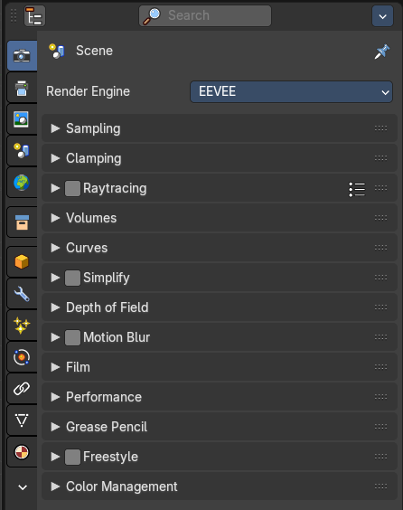
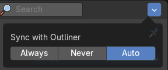
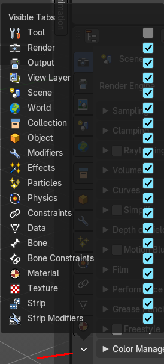
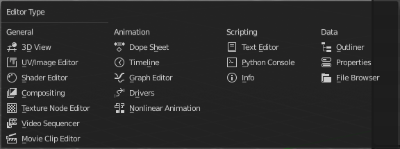
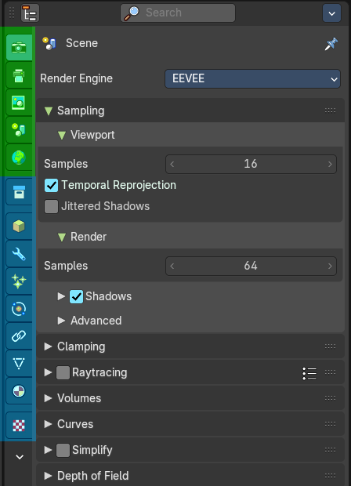
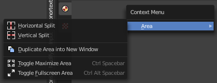
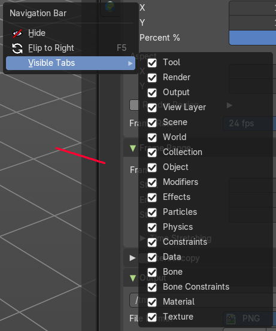
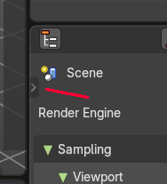
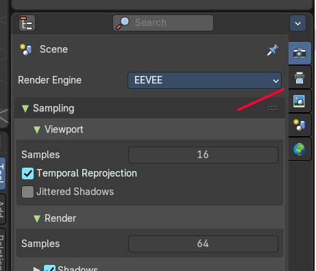
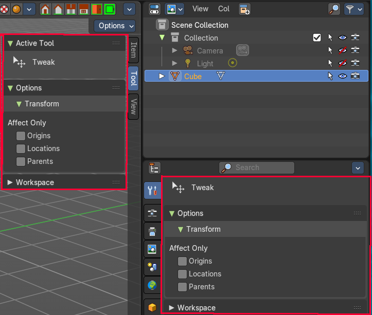

Properties Editor

The Properties Editor is the core to manage the data in Bforartists. It is used to edit data and properties for the Active Scene and the Active Object. It contains Scene and Object related settings and properties. It contains all the tool settings for the current active tool. And it contains global settings and properties, like Render settings. Materials, Particle settings. etc.
The Properties editor is divided into several tabs. And the tabs are divided into several panels. The tabs buttons can be found asides.
Various content just appears when you are in the right context. Means when you have a specific object type selected, are in a specific mode, etc.
Hotkey functionality
You can scroll through the tabs by holding down ctrl and using the scroll wheel.
Slider snapping

Snapping also works at sliders. Hover with the mouse over the slider, start to slide, and holding down Ctrl will snap the sliders in incremental steps.
When it's a default value between 0 and 1 then it usually snaps in 0.1 steps. When it's a default value over 1 then it usually snaps in steps of 10.
Header and Tabs
The header contains a button to switch to Outliner and back. And it contains a search and a context pin.
| Entry | What it does |
|---|---|
| Cycle space type set | Switch between outliner and properties editor. Sometimes you want more space for the outliner. And before you start to pull around the editor windows you can simply switch to the outliner from the properties editor. And back. |
| Search | Allows you to search for specific terms. All not matching content is greyed out. When the matching term is in one of the closed panels, then this panel will open up. |
Options

Sync with Outliner
Adjust if properties editor is in sync with the outliner. It can make sense to turn off sync for performance reasons.
| Entry | What it does |
|---|---|
| Always | Always sync outliner with properties editor. |
| Never | Never sync outliner with properties editor. |
| Auto | Sync outliner with properties editor when they share an edge with each other. |
Visible Tabs

Which tabs are displayed.
Note that you usually need all of them, except the Tool tab. Which we have hidden away in Bforartists. It is a double to the tool settings in the sidebar of the 3d view. You can however turn it on again.
Context pin
The header can also contain a pin icon in some areas. This pin icon allows you to collapse the tabs to just the tabs that are available for the currently selected kind of object type.
Editortype Menu

You can display a Editortype Menu in the header. This menu allows you to switch to another editor type. Note that this menu is hidden by default. You can reveal it in the right click menu of the header area.
Navigation Tabs

The navigation tabs to navigate in the Properties Editor are vertically aligned besides the editor.
It is divided into two sections. Globals Section. Green. and Object Data section. Blue.
The navigation tabs are divided into two groups. Globals section and Object Data Section. We will cover the content of the different tabs in the corresponding section of the manual.
Globals section (green)
The Globals section contains everything that is not related to the currently selected object. But global. Render settings, View-, Scene- and World settings.
Object Data Section (blue)
The Object Data section contains everything that is related to the currently selected object. From mesh data across material up to texture and particle system.
The content differs, dependent of the currently active object. For an Armature you will have other tabs than for a Mesh object, and other tabs for a Lattice object for example.
There are some general tabs though for all object types. Like Object, Constraints, Texture, or Physics tab.
Properties Editor - Context menu
When you click into an empty area of the Properties editor then you call the context menu.
Area

This menu contains general view functionality. And exists in most other editor types too.
| Entry | What it does |
|---|---|
| Horizontal Split | Splits the current view horizontally into two independent editor windows. |
| Vertical Split | Splits the current view vertically into two independent editor windows. |
Duplicate Area into New Window

Duplicate Area into New Window makes the selected editor window floating. You can then drag it around at the monitor. It is not connected with the rest of the UI anymore.
A separated window cannot be merged into the main window again. You have to close it when not longer needed.
| Entry | What it does |
|---|---|
| Toggle Maximize Area | Displays the editor maximized with menus. To return from the maximized view press hotkey Ctrl + Space. Or reuse the menu item in the area menu. |
| Toggle Full screen Area | Displays the editor maximized without menus. To return from the full screen view press hotkey Ctrl + Alt + Space. |
Properties Editor - Right click menu

When you right click at the tabs area then you will reveal another little menu. The navigation bar menu.
Hide

Hides away the tabs. You can reveal the tabs by clicking at the tiny triangle button.
Flip to Right / Left

Flips the navigation tabs to the right or the left side of the properties editor.
The tabs can be displayed at the left or at the right side. Either click right in the empty space of the tab area. This will bring up the Context menu where you can flip the whole tabs menu bar to the right or to the left. Or move with the mouse over the area and press F5.
Visible Tabs
Which tabs are displayed.
Note that you usually need all of them, except the Tool tab. Which we have hidden away in Bforartists. It is a double to the tool settings in the sidebar of the 3d view. You can however turn it on again.
Properties Editor - Tool Tab

We have usually a chapter for each tab. Except the tool tab. It is a double to the content in the sidebar of the 3d view. And so it makes no sense to display it. We have hidden it away in Bforartists by default.
And since it is a gigantic double content, and since we even have hidden it in our defaults, it also doesn't make sense to repeat the documentation for it here. Please have a look at the 3d viewport sidebar chapters instead.